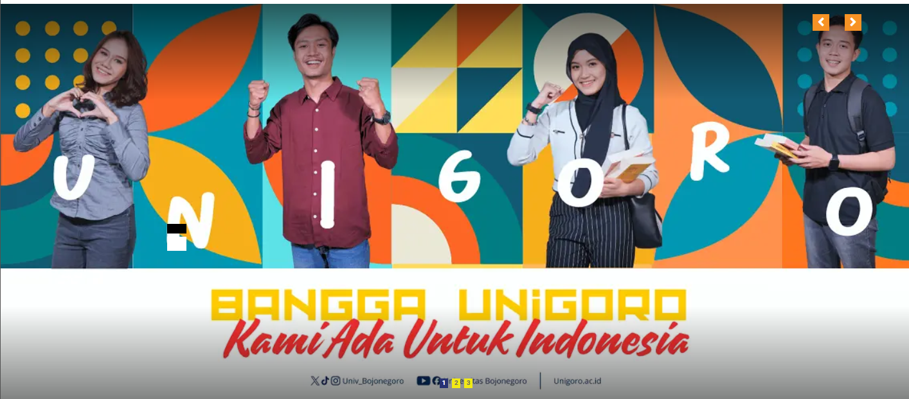
Best CampusThe best campus in Bojonegoro Regency according to |
Reputable and classy lecturescompetent lectures with masters and doctoral degrees |
PerformanceAchieving succes on the international and national stage |
ScholarshipVarious scholarships are available |
Study ProgramA wide selection of study programs |
Cost of EducationAffordable education fees / UKT |
Student Advance ProgramDevelopment of students' hard skills and soft skills |
CareerCareer and psychology consulting services through |
FacilityModern lecture facilities, laboratories and |
|
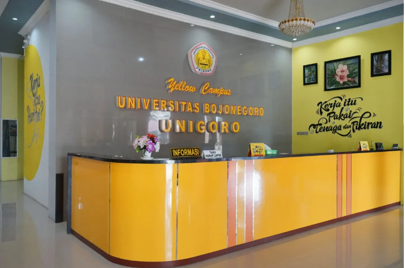 |
About UnigoroBojonegoro University (Unigoro) was founded on April 9, 1981, under the auspices of the Suyitno Bojonegoro Foundation. Unigoro's presence addresses the need for scientific and higher education development in Bojonegoro Regency. Currently, Unigoro continues to spread benefits and make its best contributions to the nation. By 2024, The Yellow Campus will have four accredited faculties and nine study programs. In the near future, Unigoro will also establish new faculties and a postgraduate school. Furthermore, Unigoro has established positive collaborations with various parties and strategic partners. Unigoro's academic community has achieved numerous academic and non-academic achievements, even at the international level. This demonstrates the university's full support for its faculty and students to improve their quality and capacity. |
885MABA Tahun 2022 |
771MABA Tahun 2023 |
953MABA Tahun 2024 |
1138
|
Prestasi |
EVENT |
|
|
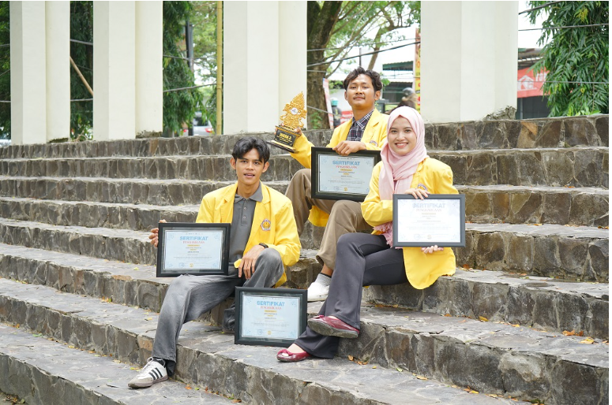 Angkat Khazanah Geopark Bojonegoro ke
|
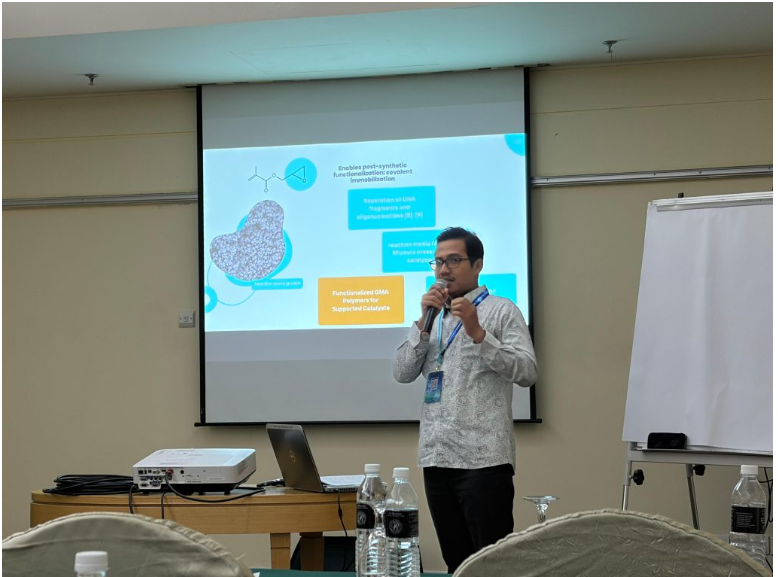 Unigoro Tembus Forum Ilmiah Dunia,
|
FESTIVAL BUDAYARabu, 26 November 2025 jam 16:00 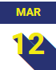 Kejuaraan Rektor Unigoro CUP 2025Pertandingan Empat Cabang Lomba 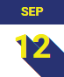 Sosialisasi PEMUTUPeningkatan kualitas perguruan tinggi |
YouTube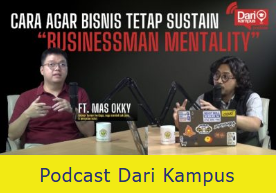 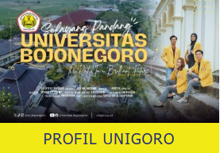 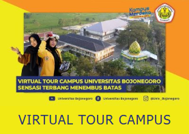 |
Kegiatan Terbaru |
|
|
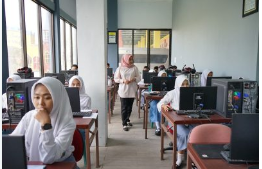 Kuliah lebih ringan! Pemkab
|
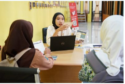 PMB UNIGORO jalur reguler
|
PEJABAT |
|||
|
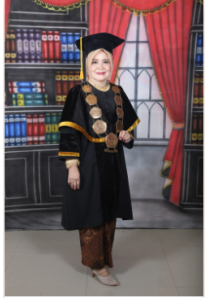 Dr. Tri Astuti Handayani,
|
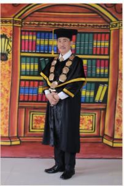 Andrianto Prabowo, SH.,
|
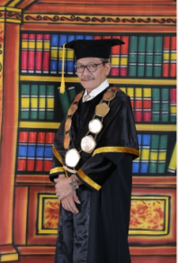 H. Moehadi, SE., MM (Wakil
|
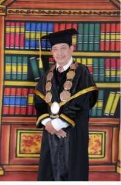 Ir. H. Noor Djohar, MM
|
Sertifikat Akreditasi
|
QUICK LINKS |
SOSIAL MEDIA


|
Categories |